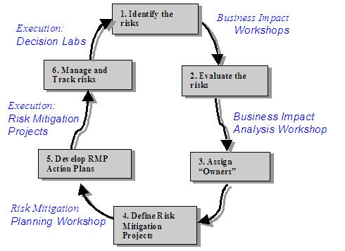

| Guideline: Risk Mitigation (PSI) |
 |
|
1 Description This Technique Paper provides overview information regarding Risk Mitigation during Packaged Solution Implementation projects. Any business initiative involving an ERP implementation will confront potential obstacles to success. It is important to identify and address these obstacles early to minimize their negative effects. The purpose of this document is to explain the Risk Mitigation Process that will be used to identify and manage the possible barriers to the project’s success. The Risk Mitigation Process explains how to deal with obstacles by creating Risk Mitigation Projects that contain Action Steps to be completed by Risk Mitigation Teams with the assistance of the Organization Change Management Team and Project Management. Data collected during Business Impact Workshops forms the foundation for the Risk Mitigation plan. 2 Context The IBM approach to Risk Mitigation consists of a series of workshops, tools, and subsequent activities used to identify both severe and likely risks, activities to identify appropriate mitigation activities for these risks, and activities to mobilize risk mitigation teams.
Projects will typically have a very detailed project plan for the technical aspects of the package implementation.
However, managing all the changes and risks associated with people and processes is often overlooked, or
underestimated. If these risks are not addressed, the system implementation will likely fail to meet the business
benefits and project objectives. 3 Steps  3.1 Identify risks Business Impact Workshops (BIWs) are structured to allow project team members to participate in the process of identifying and qualifying potential risks to the implementation project. BIWs to identify strategic risks may be conducted as early as the Prepare Phase of the project. Participants of these strategic BIWs are typically steering committee, project management, and project team leads. BIWs to identify tactical risks are typically performed following the Re-design/Design Phase of the project. (N.B. Until Re-design/Design is completed, teams are generally not aware of the impact the implementation may cause.) Participants of the tactical BIWs are project team members and extended project team members. Tactical BIWs are typically performed for each major process affected by the implementation, e.g. Order to Cash, Purchase to Payment, Plan to Manufacture, etc. 3.2 Evaluate risks Input the data from the BIW into the Business Impact Workshop Data Collection and Analysis Template [Sample]. During the BIWs, the workshop participants qualify the severity of the potential risk by assigning level of impact to people process and technology. The workshop participants also qualify the likelihood of the potential risk. After the data from the workshop is input into the Business Impact Workshop Data Collection and Analysis Template [Sample], the data is reviewed. It is not uncommon for the results for an individual item to be contrary to the intent of the workshop participants, e.g. the wording of a potential risk may result in the assessment by participants placing the risk in an inappropriate quadrant. Any obvious miscoding is corrected. 3.3 Assign owners
The Business Impact Analysis Workshop (BIA) serves as a vehicle to review the data from the BIWs. The Business Impact
Analysis Workshop Presentation [Sample] can be tailored for the specific client to introduce the client to the analysis
process. During the review of the BIW data, potential Risk Mitigation Projects (RMPs) are identified.
RMP owners are those individuals within the organization who have ultimate accountability for managing the RMPs and who
will report progress of RMPs during regular business-to-business meetings. Typically, RMP owners are one level below a
steering committee member and will use personnel from appropriate business areas and functional teams as resources to
perform the change activities required by the RMPs. 3.4 Define Risk Mitigation Projects The Organization Change Management team facilitates the functional teams in identifying RMPs that will be completed to address potential risks that are both severe and likely to occur. Once RMPs and RMP owners have been identified, Risk Mitigation teams must be formed. Risk Mitigation team members are those individuals within the organization who have the business expertise required to execute RMPs. On average, the activities of a Risk Mitigation team member will require no more than a 20% time commitment each week during the execution of a RMP. 3.5 Develop RMP Action Plans With input from the Organization Change Management team, each Risk Mitigation team creates an Action Plan for each RMP, including Action Steps with expected start and completion dates.3.6 Manage and Track Risks Facilitated by the Organization Change Management team, the Risk Mitigation teams implement action steps. As necessary, Risk Mitigation teams seek assistance from Organization Change Management to facilitate issue resolution surrounding these action steps. The process owners communicate status on RMPs in regular business-to-business meetings. The project manager communicates the status of the Risk Mitigation Projects to the Steering Committee at regular meetings. 3.7 OTHER: Two consultants best facilitate each workshop. For strategic BIWs: 4 hours is required for preparation, 4 hours is required to conduct the BIW. Following the BIW, 4 hours is required for data entry and analysis, followed by 4 hours for the BIA workshop. Subsequent risk mitigation activities are typically incorporated into the project plan or deferred to later in the project for strategic risks. Therefore, strategic BIWs typically require approximately 32 hours consulting time. For tactical BIWs, 4 hours is required for preparation, 4 hours is required to conduct each BIW. Following the BIWs, 4 hours is required for data entry and initial analysis for each workshop, followed by 8 hours for the BIA workshop. Risk Mitigation Project Owner Kickoff presentation requires 8 hours for preparation and 2 hours for delivery. For each RMP, 8 hours is required to work with each RMP Owner to identify action steps. Managing the RMP process and facilitating RMP teams requires 4 hours per RMP team per week for an average of 8 weeks. Based on four core processes resulting in 10 RMPs, tactical BIWs and subsequent activities require approximately 528 hours consulting time. Benefits:
The Business Impact Workshops (BIW) and Risk Mitigation Process Execution are particularly useful in the transition
involving ERP, CRM or SCM systems. Business Impact Workshops are generally conducted after the implementation team has
held the business process design meetings and developed more detailed information regarding the business processes and
the technology needed to support the business objectives of the project. When these results are combined with the
output from the Organization Readiness Assessment and the Change Leadership interviews, a broad picture of the scope of
the change effort will emerge. A detailed Transition Management Plan can then be developed to manage the change.
Identifying, prioritizing and mitigating the highest level risks early in the implementation will also help the
organization focus on realizing the business benefits of the ERP, CRM or SCM project. Risk Mitigation Process Execution
is an excellent tool to drive broad-based participation – a critical success factor for change initiatives. Personnel
from across the organization become involved in key decisions and risk mitigation activities resulting in wider
acceptance of the change initiative. 4 Tools 4.1 Business Impact Workshop Presentation [Sample] 4.2 Business Impact Workshop Data Collection and Analysis Template [Sample] 4.3 Business Impact Analysis Workshop Presentation [Sample] 4.4 Risk Mitigation Project Owner Kickoff Presentation [Sample] Risk_mitigation_project_owner_kickoff_presentation.PPT 4.5 Risk Mitigation Project Owner Checklist [Sample] Risk_Mitigation_Project_Ownership_Checklist.doc 4.6 Risk Mitigation Project Reporting Template Risk_Mitigation_Project_Team_Report.doc 4.7 Risk Mitigation Project Tracking Spreadsheet [Sample] Risk_Mitigation_Project_Tracking_Spreadsheet.xls 5 Examples See Section 4. |
| © Copyright IBM Corp. 1987, 2012 All Rights Reserved Property of IBM These materials are intended only for use as part of an IBM engagement |